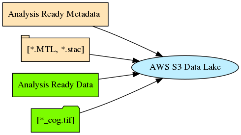
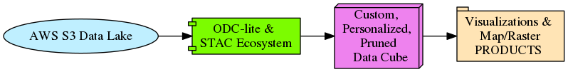
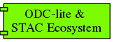
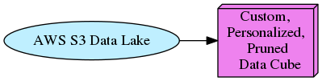
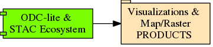
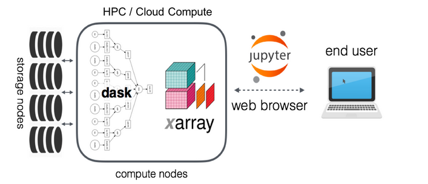
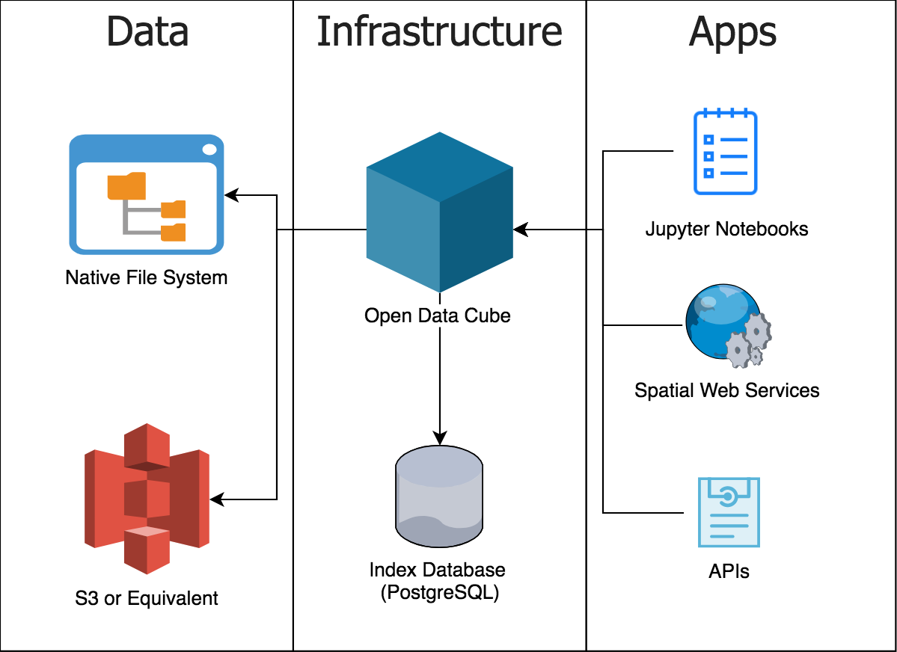
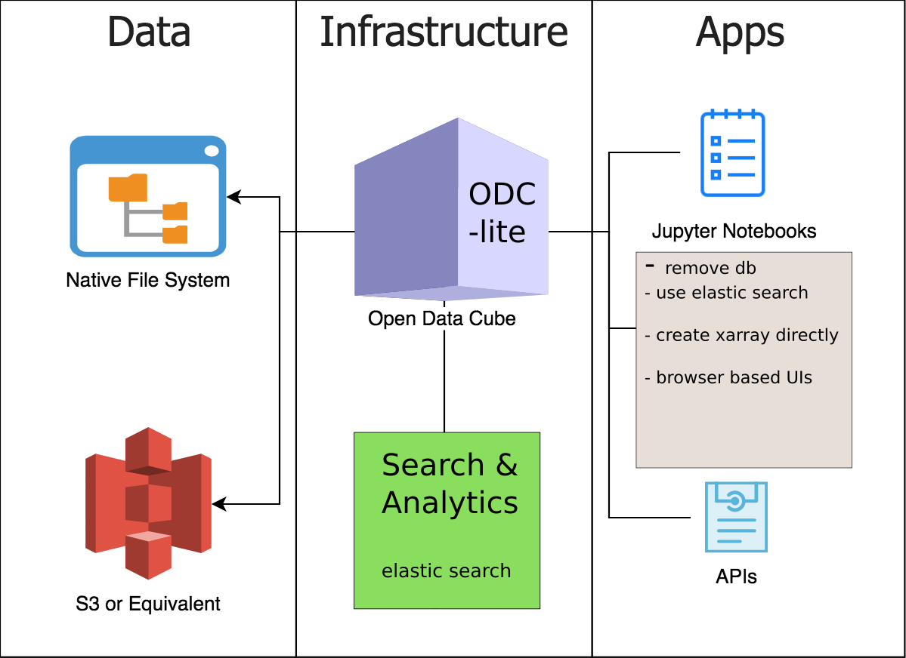

ODC Operational Concept STAC COG¶
 not ready
not ready
Version 0.1¶
February 2019¶
Concept of Operations¶
Author: Tony Butzer
Document Overview¶
General Data Lake Model – Powerful Paradigm¶
data lake powerful design pattern
Data Lake to Visualization and Products¶
data lake to viz design pattern
This document is organized as follows:
S1 - Executive Summary
S2 - Science Concept Ecosystem View
Systems Overview
S3 - System Scope
S4 - Architectural Components
S5 - Use Cases and Operational Requirements
S6 - Operational Scenarios
Appendices [A B C]
S1 - Executive Summary¶
The intent of the ODC initiative is to collaborate with international organizations to build an ecosystem that efficiently utilizes the emerging data lakes and uniform metadata catalogs. The EROS activity/effort with respect to ODC initially focused on a single application question regarding ODC libraries supporting LCMAP models and products. With the knowledge garnered from that successful test the EROS ODC team is tackling a more general problem of using ODC as part of an arsenal of tools to discover data and immediately visualize this data in real-time with nothing more than the ubiquitous browser and cloud ready raster imagery and associated metadata.
This Operations Concept document describes the science work-flow concept, the associated end-to-end processes, the system components needed to support these flows, the architecture tiers - reference architectures and code/component taxonomy recommended to achieve the intended outcome articulated above.
“ It is simply not technically feasible or financially affordable to consider traditional local processing and data distribution methods “ - OPEN DATA CUBE (website)
This Concept of Operations covers the scope of work for “The Open Data Cube Special Study” research project for year two of the project and consistent with the larger ODC project this USGS EROS effort has the following high level objectives:
Minimize time and specialized knowledge required to access and prepare satellite data
Free and open EO satellite data and application algorithms
Open source software solutions that are advanced through community contributions
Consistent data architectures that allow sharing of code, tools and algorithms
Efficient time series analyses to support land change applications
Use of multiple datasets together (e.g., interoperability and complementary)
Use of common GIS tools (e.g. QGIS, ArcGIS) and Libraries (e.g. GDAL/Rasterio, Xarray, STAC, ElasticSearch)
Local and regional solutions that avoid commercial and internet dependence
Sustained customer service and user support
Vision Contest here:¶
SCOPE¶
ODC STAC SCOPE
The majority of effort for the study will be focused on understanding and deploying prototypes based on the rapidly emerging standards for cloud based storage and exploitation of satellite imagery.
The most significant technical elements are:
cloud stored geotifs: COGs
cloud crawled image catalogs: STAC
memory stored data-cubes: Xarrays
This project is about creating the ecosystem to support science and does not include expertise or opinions on the utility of higher level scientific algorithms/heuristics other than to provide the Xarray Abstraction that clearly supports a wide gamut of application work-flows including LCMAP continuous change detection models.
The ODC ecosystem elements can be enumerated as follows:
Reference Architectures
PANGEO
REST
Operational Concepts and Process Models
Infrastructure
Storage
Compute
Network
Security
Search and Analytic Engine
Elastic Search
postgreSQL and OGR
Middleware and Foundation Libraries
Application Libraries
ODC Library
Visualization Foundation Libraries
GDAL plus Xarray etc.
Data Arrays and Data Frames (e.g. Pandas, GeoPandas)
Serialized Data and Objects (e.g. json, geoJson, pickle)
Data Storage Formats (e.g. geotiff, netCDF)
DevOps
System Administration
Automated System Deployment
Infrastructure as Code
Orchestration and Scaling
Mesos, Kubernetes, AWS-Lamba, Docker-Swarm
Application Prototypes
Xarray creation and display notebooks
Notional science notebooks
Image Discovery Browsers
Coverage Maps and Scene Counts (by: year,month)
Visualizations
Swaths, Scenes, AOIs
Pixel Level
Pixel QA Plots
Pixel Rods (time axis)
Indices (e.g. NDVI, NDWI etc)
Coordination and Communication
code sharing & repository management
hackathon and sprint management
steering and governance
History¶
Year 1 ODC Study Emphasis - LCMAP case study¶
year one
The ODC Special Study project at EROS concluded the first year with a focus on examining the relationship between LCMAP and the ODC architecture/library. This was as good a place as any to observe the ODC in action and understand the end-to-end process activities needed to actively prototype the use of ODC as middleware in support of LCMAP model and product generation. EROS learned a ton by participating this larger ODC community and at the same time focusing on one of EROS’s main efforts to use Landsat data to assess and predict land change.
This effort was not hypothetical or theoretical but rather empirical.
The hard and often arduous tasks included the following:
Creating data lakes on top of local and cloud data storage with multiple processing levels and multiple metadata types
Setting up and populating database stores for indexed metadata
Writing software tools from scratch to manage end-to-end data curation from data portals to converted geotifs [COGs]
The following conclusions were formed:
ODC is a great prototyping environment
ODC is a premier instance of the new PANGEO reference architecture
LCMAP pyccd input pixel-rods can be easily sliced from an Xarray
The risks of running LCMAP in the cloud are almost nil
The cloud will rapidly shift the way applications are run and minimize infrastructure waste while at the same time delivering impressive time to solution metrics.
The ODC community represents and important arena for discussing and implementing Landsat higher level products.
The browser is the best place for the user interface for future GIS applications.
Year 2 ODC Study Emphasis¶
year two
The ODC Special Study project at EROS concluded the first year with a focus on examining the relationship between LCMAP and the ODC architecture/library. This was as good a place as any to view the
Introduction¶
“The goal of land-change science is to determine changes in the type, intensity, condition, and location of land use and cover as indications of possible impacts to and from the interactions between people and nature.” LCMAP – ConOps
Object storage traversal with metadata organized via STAC will prevail
The goal of this effort is to support land-change science as well as a myriad of other application use-cases from a deceptively simple cloud storage model.
Use AWS S3 and store:
COGs
A STAC catalog of metadata to reference the above COGs
This data and metadata can them be exploited in highly scalable distributed ways with minimal code and maximum utility with the most common of tools, components and programming languages.
The momentum and rapid discoveries in this emerging model are proving to be revolutionary. Some existing applications reference pointers to each of the work flow items will be document as part of this “living Operations Concept”.
The system proposed will meet the following data user objectives:
Real-time exploration of live Satellite image through time and the ability to:
Visualize many band combinations
Compute common indexes real time
Rapidly construct customize, personalized data cubes
Selected Area of Interest
Selected Date Range
Automated and Manual Data Pruning of “ugly” data
Support an obvious transition for small scale ad-hoc algorithm development to embarrassingly parallel execution at continental scale.
Many, Many to be discovered uses of the STAC/COG ecosystem.
Technical Architecture¶
PANGEO Reference Architecture¶
technical reference architecture
The above PANGEO architecture is an outgrowth of an enthusiastic set of Xarray users and developers.
Key tenets of PANGEO include:
Ability to use high-level data models (e.g. Xarray)
Ability to leverage distributed parallel computing (e.g. Dask) on HPC systems or on cloud computing systems
Ability to work interactively (e.g. Jupyter) or using batch processing
PANGEO is: A community platform for Big Data geoscience
ODC is a major instance of the PANGEO concept.
ODC AS IS¶
what is odc
Open Data Cube is designed to run on every platform from super computer centers to personal computers and be able to manage large datasets on local disk arrays.
The largest ODC instance runs the Digital Earth Application suite on the National Compute Infrastructure in Canberra Australia.
ODC-lite Notional Architecture¶
what is odc lite
ODC-lite is target toward cloud elastic compute topologies and leverages low cost distributed cloud object storage. ODC-lite is expected to be very few lines of code and outputs the same data object as its larger cousin ODC namely the xarray.
Document Purpose¶
S2 - Science Concept Ecosystem View¶
Process Reference Model¶
Source Data Curation -> Analysis Ready Data & Analysis Ready Metadata -> Data Discover ->
Data Pruning ->
Spatial Analysis & Spectral Analysis -> Assessments & Projections
 Process Reference Model
Process Reference Model
LSAA Cloud Curation Pipeline -> S3 Data/Metadata Buckets -> EO Browser/Analyzers & STAC Surfers ->
ODC Application Suite -> Visualizations & Map/Raster Products
ODC Code and Project Evaluation¶
ODC Strengths¶
The xarray portable data cube construct
Supports many EO satellites, not just Landsat
Greatly simplifies the creation of spontaneous, customized, user-defined EO data cubes
supports my favorite projection
my area of interest filtered from the mass of data
my temporal depth from single scenes to full time-series
scientific computations work on my entire cube
I don’t need to buy a bunch of local disk
supports a myriad of map-reduce data problems
Rapid full country adoptions of the technology - 20 by 2020
Most recent is MEXICO supported by INEGI - Instituto Nacional de Estadistica y Goegrafia
S2 - Science Concept Ecosystem View¶
- Systems Overview